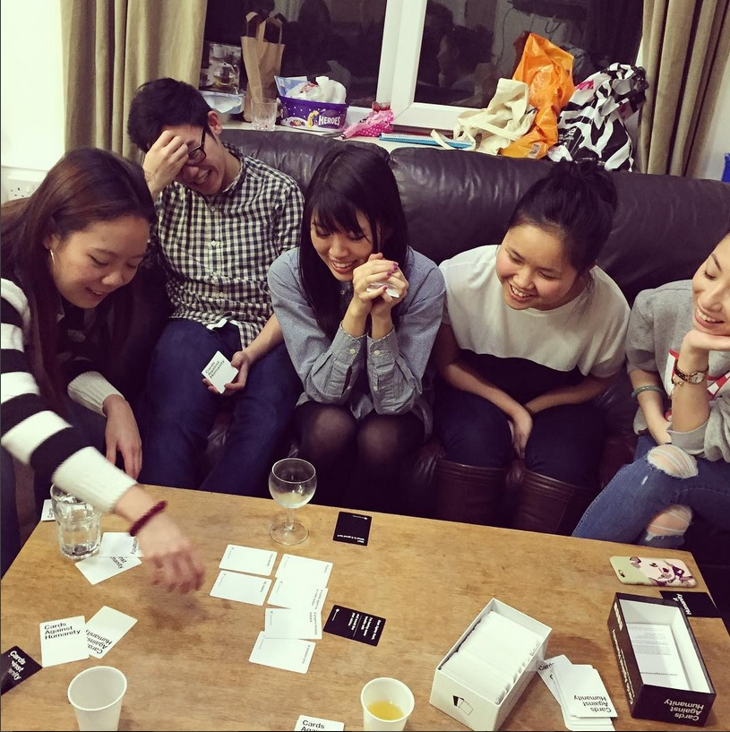
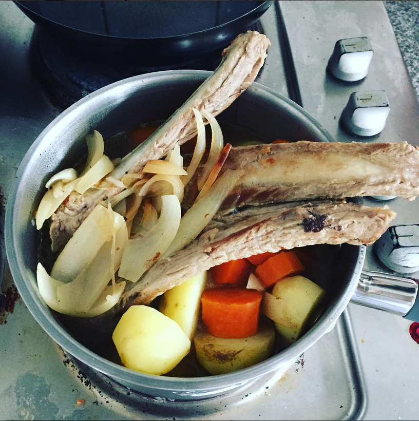

Cristian's Peppered Mulled Wine

This recipe was introduced to me by my lovely Romanian roommate Cristian on my birthday party, so I thought it is appropriately to name it after him. This recipes is ridiculously simple, perfect for those days old leftover wine and pesky colds
Ingredients
- Old red wine that does not yet turn sour, so roughly 3-7 days depends on the wine. Preferably inexpensive wine with not too bold flavours, such as young Merlot, Burgundy, Syrah and Beaujolais
- Black coarsely ground peppers or blackpeppercorn
- 100g sugars, or to taste
Methods
- In a large pot heat up the wine at medium heat
- Add couple of pepper corns or 3-4 twist of black peppers
ABC soup

This soup is called ABC soup because how easy it is to cook. It is popular across Asia and each country have a different recipes, hence I will list couple of different options to personalise this recipe to your taste!
Ingredients
- 250g of pork/chicken thigh/ ribs
- 1 large carrots
- 2 medium potatoes
- 1 large onion. roughly chopped
- (Optionals)
- Tomatoes
- For a more Chinese flavour, add:
- Half of a sweet corn
- Goji berries
- 4-5 dried red dates, which is available in most Asian market
- Peppercorns
- 3 whole garlic cloves
- For a more Vietnamese taste:
- Add 2 table spoon of fish sauce
Methods
- Brown the onions in a big pot with a spoonful of oil
- Blanched the bones and meat in boiling water to remove the scum
- Put all of the meat and vegetables in to a pot, bring to boil
- Shimmered from 30 minutes to 1 hours or until everything is cook, depends on how hungry you are, the longer the more tender the meat will be. I usually would work in the kitchen while waiting for the pan to shimmer
- Serve with hot rice, or even pour over hot rice for a full meal